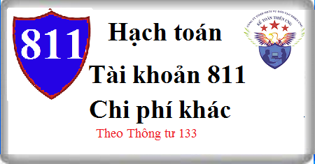

Hướng dẫn cách hạch toán Tài khoản 811 theo thông tư 133, Cách hạch toán tiền phạt vi phạm hợp đồng kinh tế, vi phạm hành chính, Giảm TSCĐ đã nhượng bán, thanh lý, hạch toán kết chuyển chi phí khác.
1. Nguyên tắc kế toán Tài khoản 811 - Chi phí khác
a) Tài khoản này phản ánh những khoản chi phí phát sinh do các sự kiện hay các nghiệp vụ riêng biệt với hoạt động thông thường của doanh nghiệp. Chi phí khác của doanh nghiệp có thể gồm:
- Chi phí thanh lý, nhượng bán TSCĐ (gồm cả chi phí đấu thầu hoạt động thanh lý). Số tiền thu từ bán hồ sơ thầu hoạt động thanh lý, nhượng bán TSCĐ được ghi giảm chi phí thanh lý, nhượng bán TSCĐ;
- Chênh lệch giữa giá trị hợp lý tài sản được chia từ BCC nhỏ hơn chi phí đầu tư xây dựng tài sản đồng kiểm soát;
- Giá trị còn lại của TSCĐ bị phá dỡ;
- Giá trị còn lại của TSCĐ thanh lý, nhượng bán TSCĐ (nếu có);
- Chênh lệch lỗ do đánh giá lại vật tư, hàng hóa, TSCĐ đưa đi góp vốn vào công ty liên doanh, liên kết và đầu tư khác;
- Tiền phạt phải trả do vi phạm hợp đồng kinh tế, phạt vi phạm hành chính;
- Các khoản chi phí khác.
b) Các khoản chi phí không được coi là chi phí được trừ theo quy định của Luật thuế TNDN nhưng có đầy đủ hóa đơn chứng từ và đã hạch toán đúng theo Chế độ kế toán thì không được ghi giảm chi phí kế toán mà chỉ điều chỉnh trong quyết toán thuế TNDN để làm tăng số thuế TNDN phải nộp.
2. Kết cấu và nội dung Tài khoản 811 - Chi phí khác
Bên Nợ: Các khoản chi phí khác phát sinh.
Bên Có: Cuối kỳ, kết chuyển toàn bộ các khoản chi phí khác phát sinh trong kỳ vào tài khoản 911 “Xác định kết quả kinh doanh”.
Tài khoản 811 không có số dư cuối kỳ.
3. Cách hạch toán Chi phí khác Tài khoản 811
a) Hạch toán nghiệp vụ nhượng bán, thanh lý TSCĐ:
- Ghi nhận thu nhập khác do nhượng bán, thanh lý TSCĐ, ghi:
Nợ các Tài khoản 111, 112, 131,...
Có TK 711 - Thu nhập khác
Có TK 3331 - Thuế GTGT phải nộp (33311) (nếu có).
- Ghi giảm TSCĐ dùng vào SXKD đã nhượng bán, thanh lý, ghi:
Nợ TK 214 - Hao mòn TSCĐ (giá trị hao mòn)
Nợ TK 811 - Chi phí khác (giá trị còn lại)
Có TK 211 – Tài sản cố định (nguyên giá)
- Ghi nhận các chi phí phát sinh cho hoạt động nhượng bán, thanh lý TSCĐ, ghi:
Nợ TK 811 - Chi phí khác
Nợ TK 133 - Thuế GTGT được khấu trừ (1331) (nếu có)
Có các TK 111, 112, 141,...
- Ghi nhận khoản thu từ bán hồ sơ thầu liên quan đến hoạt động thanh lý, nhượng bán TSCĐ, ghi:
Nợ các TK 111, 112, 138...
Có TK 811 - Chi phí khác.
b) Khi phá dỡ TSCĐ, ghi:
Nợ TK 214 - Hao mòn TSCĐ (giá trị hao mòn)
Nợ TK 811 - Chi phí khác (giá trị còn lại)
Có TK 211 – Tài sản cố định (nguyên giá)
c) Kế toán chi phí khác phát sinh khi đánh giá lại vật tư, hàng hoá, TSCĐ đầu tư vào công ty liên doanh, liên kết và đầu tư khác: Thực hiện theo quy định của các TK 228. Chi tiết xem tại đây: Hạch toán đầu tư góp vốn vào đơn vị khác
d) Trường hợp tổ chức lại doanh nghiệp, chuyển đổi sở hữu doanh nghiệp, chuyển đổi hình thức doanh nghiệp, nếu được phép tiến hành xác định lại giá trị doanh nghiệp tại thời điểm chuyển đổi, đối với các tài sản được đánh giá giảm ghi:
Nợ TK 811 - Chi phí khác
Có các TK liên quan.
đ) Hạch toán các khoản tiền bị phạt do vi phạm hợp đồng kinh tế, phạt vi phạm hành chính, ghi:
Nợ TK 811 - Chi phí khác
Có các TK 111, 112
Có TK 333 - Thuế và các khoản phải nộp Nhà nước (3339)
Có TK 338 - Phải trả, phải nộp khác.
e) Cuối kỳ kế toán, kết chuyển toàn bộ chi phí khác phát sinh trong kỳ để xác định kết quả kinh doanh, ghi:
Nợ TK 911 - Xác định kết quả kinh doanh
Có TK 811 - Chi phí khác.
--------------------------------------------------
Kế toán Diệu Tâm Chúc các bạn thành công! Bạn muốn học cách hoàn thiện sổ sách, kê khai thuế, tính thuế, Lập báo cáo tài chính, Quyết toán thuế thực tế chuyên sâu... Có thể tham gia: Lớp học thực hành kế toán.
Kế toán Diệu Tâm Chúc các bạn thành công! Bạn muốn học cách hoàn thiện sổ sách, kê khai thuế, tính thuế, Lập báo cáo tài chính, Quyết toán thuế thực tế chuyên sâu... Có thể tham gia: Lớp học thực hành kế toán.
